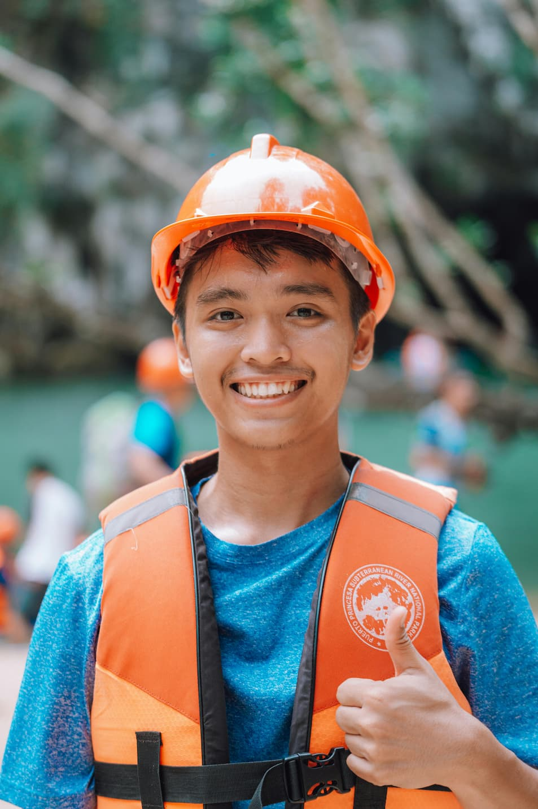

At Wild Current Rafting, our mission is simple: get you on the water and keep you smiling. Whether you're a first-timer looking for a taste of adventure or a seasoned paddler chasing Class V thrills, we craft experiences that push your limits and leave you wanting more. Safety is our foundation. Fun is our promise. The river is our home — and we'd love to share it with you.